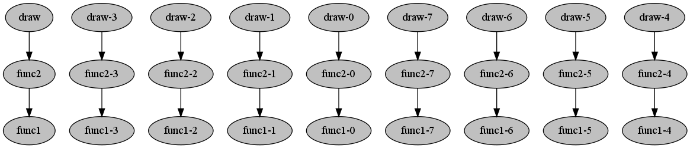

Contents
Basic compmake usage¶
This tutorial gives some motivation for using compmake and explain the basic usage.
Why using compmake¶
This section explains why you would want to use compmake. If you already know why, skip ahead to Preparing your programs for compmake.
Suppose that you are working on this simple program:
from mycomputations import func1, func2, draw
for param1 in [1, 2, 3]:
for param2 in [10, 11, 12]:
res1 = func1(param1)
res2 = func2(res1, param2)
draw(res2)
This is a very simple program. Suppose, however, that the functions func1(), func2() are very computational expensive. If that’s the case, you encounter several problems that slow down your progress.
Suppose you want to improve the function draw(). You find yourself running and running the computation again, even though func1 and func2 did not change. It’s obvious that some caching mechanism is needed. Yes, you can easily dump the intermediate results to file using the pickle module. Or you can use memoization: you google for the right Python decorator, maybe you add a persistent cache. But now the 5 lines program has become a (buggy) 30 lines program.
You wonder whether there’s an easy way to do caching.
Suppose you want to try out another value for parameter param1. Because you don’t want to do the other computations again, you comment out one line, writing param1 = [42]. Later on, you wonder whether you did try all combinations of param1 and param2.
You wonder whether there is an easy way to run selectively part of the computation.
Ooops! You left the computation running for the night. When you check it out in the morning you discover that there is one combination of param1 and param2 that makes func2 throw an exception. Your program terminated and you have to start again from the beginning.
You wonder whether there’s an easy way to work around the failing of part of your computations.
What about parallelization? Yes, the multiprocessing module seem quite easy to use. You just need to add a few lines of code. But wait, there is a nested loop. You probably have to write different functions... and, where exactly can you parallelize?
You wonder why Python cannot discover the parallelizable structure in your code.
No, really, what you want is running your computation on the big server down the hall. No problem, you can log in there. But wait, you can only run draw() on your desktop because the server does not have the required libraries.
You wonder whether there’s a way to easily share the computation across machines.
In short, writing computationally intensive batch processes, (especially simulations), presents some common problems. In isolation, each of them could be overcome by writing ad hoc code. Compmake helps you by solving each of these problems (and more) in a robust way, once and for all. The price you have to pay is a slight modification of the source code, as explained in the following section.
Preparing your programs for compmake¶
The basic idea is that now your source code will just describe your computation, without actually executing it.
In practice, to use compmake, you have to modify each function call of interest by wrapping it with the comp() function. It’s easy: each fragment of the form:
result = func1(params1)
becomes:
result = comp(func1, params1)
The function comp() does not actually run the computation func1(param1), but rather it puts this “job” in the job database. It returns (immediately) a promise representing the delayed result. You can use this value in successive calls to comp() (but not directly). In this way, compmake learns the computational structure of your program.
In this example, the source code becomes (file using_compmake.py):
from mycomputations import func1, func2, draw
from compmake import comp
for param1 in [1, 2, 3]:
for param2 in [10, 11, 12]:
res1 = comp(func1, param1)
res2 = comp(func2, res1, param2)
comp(draw, res2)
When this file is passed to compmake, the following computational structure is discovered:
(This is the output of the graph command)
The next section shows how to run compmake once you have modified your source code.
Running the computation¶
Suppose that before you ran your program as python [MODULE].py. Now, you have to use the syntax:
$ compmake [MODULE] [COMMAND]
The following are some examples.
Making: The command “make [jobs]” runs the computation in series:
$ compmake example make
The first time you run this, you will see an output like the following:
done 0 | failed 0 | todo 27 | ready 9 | processing 0
done 0 | failed 0 | todo 27 | ready 8 | processing 1
jobs: -- No jobs active --
done 1 | failed 0 | todo 26 | ready 9 | processing 0
done 1 | failed 0 | todo 26 | ready 9 | processing 0
done 1 | failed 0 | todo 26 | ready 8 | processing 1
[...]
done 25 | failed 0 | todo 2 | ready 1 | processing 1
jobs: -- No jobs active --
done 26 | failed 0 | todo 1 | ready 1 | processing 0
done 26 | failed 0 | todo 1 | ready 1 | processing 0
done 26 | failed 0 | todo 1 | ready 0 | processing 1
jobs: -- No jobs active --
done 27 | failed 0 | todo 0 | ready 0 | processing 0
However, the second time, the output will be:
Nothing to do.
because compmake has cached the results of the computation.
Cleaning up: Use the command clean to clean:
$ compmake example clean
Moreover, the command remake is equivalent to clean + make.
Naming jobs¶
Each invocation of the comp() function produces one job. Each job is described by a unique ID. By default, the ID is generated by the name of the function, with a progressive number postponed. You can use the command list to obtain a list of the jobs. For this example, the output would be:
@: list
draw Not started/False
draw-0 Not started/False
draw-1 Not started/False
draw-2 Not started/False
draw-3 Not started/False
draw-4 Not started/False
[...]
As you can see, the jobs are named func1-<n>, func2-<n>, draw-<n>.
It is very useful to have distinctive names for the jobs. Compmake provides two mechanisms to that effect. The first is the function comp_prefix() which takes a string used as a prefix for the job ids generated. That command is particularly useful in scenarios like the example where we presumably want to group the functions by the parameters:
from mycomputations import func1, func2, draw
from compmake import comp, comp_prefix
for param1 in [1, 2, 3]:
for param2 in [10, 11, 12]:
# Add a prefix to the job ids
# for easy reference
comp_prefix('p1=%s-p2=%s' % (param1,param2))
res1 = comp(func1, param1)
res2 = comp(func2, res1, param2)
comp(draw, res2)
Now the list command gives:
@: list
p1=1-p2=10-draw Not started/False
p1=1-p2=10-func1 Not started/False
p1=1-p2=10-func2 Not started/False
p1=1-p2=11-draw Not started/False
p1=1-p2=11-func1 Not started/False
p1=1-p2=11-func2 Not started/False
[...]
Another method is using the job_id keyword argument to comp().:
from mycomputations import func1, func2, draw
from compmake import comp, comp_prefix
for param1 in [1, 2, 3]:
for param2 in [10, 11, 12]:
comp_prefix('p1=%s-p2=%s' % (param1,param2))
# use job_id to override default naming
res1 = comp(func1, param1, job_id='preparing')
res2 = comp(func2, res1, param2, job_id='computing')
comp(draw, res2, job_id='drawing')
Now the list command gives:
@: list
p1=1-p2=10-computing Not started/False
p1=1-p2=10-drawing Not started/False
p1=1-p2=10-preparing Not started/False
p1=1-p2=11-computing Not started/False
p1=1-p2=11-drawing Not started/False
p1=1-p2=11-preparing Not started/False
[...]
Cleaning and remaking¶
Now that you know how to give names to your jobs, you can use them for referring to them. For example:
$ compmake example make p1=1,p2=11-drawing
You can use the * wildcard. This is very useful to refer only to part of the jobs. In the example, you can write:
$ compmake example remake *-p2=11-*
to re-do only the subset of computations with a certain value of the parameters. Or, you can remake the last stage of the computation:
$ compmake example remake *-drawing
As you can see, compmake gives you peace of mind and a sense of empowerment.
- Go on to the next chapter The compmake console, more about jobs.